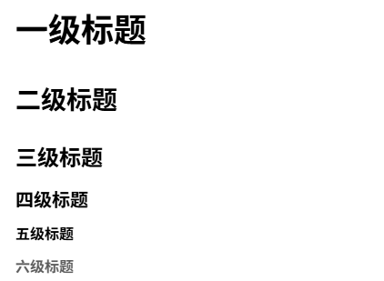
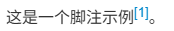
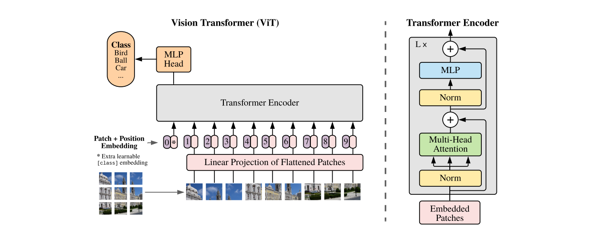

Markdown语法
本章节笔记主要来源于B站视频：《Markdown 文档基础语法（基于 IDEA/Typora 讲解最新版）4K蓝光画质 程序员必备技能 强烈推荐》。
什么是Markdown？
-
Markdown （以下写作markdown）用于编写结构清晰、易维护的纯文本笔记，广泛应用于博客、Github的README等日常场景。是程序员、科研人员的必备技能，也是科研的基础知识。
-
markdown 是一种轻量级标记语言，具有一定的格式化效果。通过使用markdown语法，用户可以快速地将纯文本格式转化为格式化文档，例如标题、列表、链接、图片等。
-
markdown 同样拥有丰富的第三方生态，就我目前地所学知识来说，Markdown 第三方生态提供了Markdown2Word、Markdown2PDF、Markdown2HTML等工具，方便用户将Markdown文档转换为其他格式的文档。对于格式功能程度，我认为txt＞markdown＞word。word提供了丰富的格式支持但大部分场景下提高了使用成本，因此word更适用与正式场景。而markdown的格式化程度要大于txt（纯文本格式），提供了基础的结构化排版功能，因此markdown更适合日常笔记、博客、结构化网页等场景。
-
值得注意的是，markdown的文件通常以.md或.markdown为扩展名，常用的渲染工具有Typora、Obsidian、IDEA/VScode里的插件等等。
文本基础语法
输出纯文本
这是一段普通文本，会被直接打印。
渲染效果：
这是一段普通文本，会被直接打印。
总结：
纯文本不需要任何标记符号，可被markdown直接输出。
文本换行
这是第一行文本。这是第二行文本。
这是第一行文本。
这是第二行文本。
这是第一行文本。（此处所有两个空格符然后接ENTER换行）
这是第二行文本。
这是第一行文本。
这是第二行文本。
渲染效果：
这是第一行文本。这是第二行文本。
这是第一行文本。 这是第二行文本。
这是第一行文本。
这是第二行文本。
这是第一行文本。
这是第二行文本。
总结：
空2格再接ENTER实现换行效果。按两次ENTER实现段落换行效果。后者相比前者，行间距变大(不过部分渲染效果好像受到编辑器影响，如我的VScode插件与本网站的markdown渲染规则有小量差异，我以网站的markdown渲染规则为基础)。此外单个ENTER换行只会充当一个空格符的效果。
文本加粗
**这是加粗文本**
__这是加粗文本__
渲染效果：
这是加粗文本
这是加粗文本
总结：
使用两个星号（**）或两个下划线（__）包围文本可以实现加粗效果。但更推荐使用星号（**），因为下划线在某些编辑器中不能被正确解析。
文本斜体
*这是斜体文本*
_这是斜体文本_
渲染效果：
这是斜体文本
这是斜体文本
总结：
使用一个星号（*）或一个下划线（_）包围文本可以实现斜体效果。但更推荐使用星号（*）。
文本加粗斜体
***这是加粗斜体文本***
___这是加粗斜体文本___
**_这是加粗斜体文本_**
渲染效果：
这是加粗斜体文本
这是加粗斜体文本
这是加粗斜体文本
总结：
使用三个星号（***）或三个下划线（___）包围文本可以实现加粗斜体效果。也可以使用两个星号（**）或两个下划线（__）包围一个星号（*）或一个下划线（_）来实现加粗斜体效果。更推荐使用星号（***）或（** *）来实现加粗斜体效果。
删除线
~~这是删除线文本~~
渲染效果：
~~这是删除线文本~~
总结：
使用两个波浪线（\~\~）包围文本可以实现删除线效果。
混合使用
**这是加粗文本**
***这是加粗斜体文本***
***~~这是加粗斜体删除线文本~~***
~~***这是加粗斜体删除线文本***~~
渲染效果：
这是加粗文本
这是加粗斜体文本
~~这是加粗斜体删除线文本~~
~~这是加粗斜体删除线文本~~
总结：
markdown的文本标记符可以混合使用，达到组合的效果，且对与标记符顺序不是那么敏感。
段落基础语法
分割线
段落1
---
***
___
段落2
渲染效果：
段落1
段落2
总结：
使用三个或以上的短横线（-）、星号（*）、下划线（_）可以实现分割线效果。分割线前后需要空一行，否则会将前文变成标题格式。这种标题声明格式使用频率低且可被一种可读性更高的方式替代，因此不推荐使用。下面会介绍如何进行标题声明。
多级标题
# 一级标题
## 二级标题
### 三级标题
#### 四级标题
##### 五级标题
###### 六级标题
渲染效果：

总结：
使用1-6个#号加空格可以实现1-6级标题的声明，markdown支持1-6级标题。且一级标题最好确保一个markdown文件里只出现一次。
列表与勾选框
有序列表
1. 第一项
2. 第二项
3. 第三项
普通文本
2. 第一项
1. 第二项
渲染效果：
- 第一项
- 第二项
- 第三项
普通文本
- 第一项
- 第二项
总结：
有序列表使用数字加点号（.）加空格来声明，数字可以重复，markdown会自动根据第一个列表的顺序进行枚举编号。因此一旦有序列表的首项声明了数字，后续的有序列表项可以使用任意数字，markdown会自动根据首项的数字进行排序。
弹幕补充：MD032规定：列表前后都应该被空白行包围。
无序列表
- 第一项
- 第二项
- 第三项
* 第一项
+ 第一项
渲染效果： - 第一项 - 第二项 - 第三项 * 第一项 + 第一项
总结：
无序列表使用短横线（-）、星号（*）、加号（+）加空格来声明，三者的渲染效果相同，但不允许混合使用。
列表嵌套
- 第一项
- 子项一
- 子项二
- 第二项
- 子项三
- 子项四
1. 第一项
1. 子项一
2. 子项二
2. 第二项
1. 子项三
2. 子项四
渲染效果：
无序列表嵌套：
- 第一项
- 子项一
- 子项二
- 第二项
- 子项三
- 子项四
有序列表嵌套：
- 第一项
- 子项一
- 子项二
- 第二项
- 子项三
- 子项四
总结：
列表嵌套通过在子列表项前添加4个英文空格来实现。无序列表和有序列表连续展示时，建议用文字、标题或注释隔开，避免不同 Markdown 渲染器把它们合并成同一个列表块。
列表结束
- 第一项
文本内容
- 第二项（两个空格）
文本内容
- 第三项
文本内容
渲染效果：
-
第一项 文本内容
-
第二项（两个空格）
文本内容 -
第三项
文本内容
总结：
列表结束必须通过两个ENTER换行来结束列表项，跳出列表块。当列表项后使用1个ENTER换行时，正如之前的表现一样，markdown只会在列表后插入一个空格接着渲染文本内容；而如果使用文本换行（两个空格+ENTER）则会在列表项的下一行插入同级文本，即缩进相同；只有使用段落换行（两个ENTER）才能跳出列表块，渲染为列表外的文本内容。
弹幕补充：markdown中双空格回车相当于word中的shift+enter，本质上“换行”；而markdown中的双回车相当于是word中的enter，本质上是“分段”。
勾选框
- [ ] 第一项
- [x] 第二项
* [ ] 第三项
渲染效果：
- 第一项
-
第二项
-
第三项
总结：
勾选框使用列表声明字符（- / * / +）加空格加中括号（[ ]）来声明，空格表示未选中（空白方框），x表示选中（勾选方框）。在 MkDocs 中需要启用 pymdownx.tasklist 扩展，并且列表前要保留空行，否则可能会被解析成普通段落文本。
代码块
段落级代码块
import torch
torch.cuda.is_available()
```python
import torch
torch.cuda.is_available()
```
渲染效果：
import torch
torch.cuda.is_available()
import torch
torch.cuda.is_available()
总结：
代码块有两种声明方式：缩进4个空格或使用三个反引号（```）包围代码块。使用三个反引号时，可以在反引号后面指定代码语言（如python、java、c++等），以便渲染器进行语法高亮显示。
行内代码块
这是行内代码块 `code`
渲染效果：
这是行内代码块 code
总结：
行内代码块使用单个反引号（`）包围代码。适用于文本中嵌入代码片段的场景。
引用文本
> 这是引用文本
这也是引用文本
这是纯文本，用于分隔引用文本。
> 这是引用文本
> 这是引用文本
> > 这是嵌套引用文本
这是纯文本，用于分隔引用文本。
> 这是引用文本
> - 引用文本内部可嵌套其它语法。
渲染效果：
这是引用文本 这也是引用文本
这是纯文本，用于分隔引用文本。
这是引用文本 这是引用文本
这是嵌套引用文本
这是纯文本，用于分隔引用文本。
这是引用文本 - 引用文本内部可嵌套其它语法。
txt 甚至可以嵌套代码块
总结：
引用文本通过在行首大于号（>）加空格来声明，推荐使用每行行首都带有引用标识符的格式，可读性更高。文本换行规则与之前保持相同。引用文本内部可以嵌套其它标识符，如列表、代码块等。但要保持每行首都带有引用标识符（>）。
超链接
直接网址
https://yidizhouluo.github.io/YidiZhouluo-knowledge/
<https://yidizhouluo.github.io/YidiZhouluo-knowledge/>
渲染效果：
https://yidizhouluo.github.io/YidiZhouluo-knowledge/
https://yidizhouluo.github.io/YidiZhouluo-knowledge/
总结：
直接输入网址或使用尖括号包围网址都可以实现超链接的效果。MD034推荐使用尖括号包围网址的方式。
注意：在某些编译环境中，直接输入网址可能不会被识别为超链接，因此建议使用尖括号包围网址的方式。
超链接形式
[这是超链接文本](https://yidizhouluo.github.io/YidiZhouluo-knowledge/)
这是我的个人知识库[YidiZhouluo-knowledge][a]，欢迎大家前往我的个人网站了解我[YidiZhouluo][b]
[a]: <https://yidizhouluo.github.io/YidiZhouluo-knowledge/>
[b]: <https://yidizhouluo.github.io/>
渲染效果：
这是超链接文本
这是我的个人知识库YidiZhouluo-knowledge，欢迎大家前往我的个人网站了解我个人网站
{kind=link}
总结：
超链接可以通过[]加()的方式声明，[]内为超链接文本，()内为超链接地址。也可以使用引用式的方式声明超链接，先在正文中使用[]加引用标识符（如[a]，也可以将a视为占位符/变量名）来表示超链接文本，然后在文档末尾使用[]加引用标识符（如[a]: <https://example.com>）来声明超链接地址。
脚注
这是一个脚注示例[^1]。
[^1]: 这是脚注的内容，可以在这里添加详细的说明或引用信息。
渲染效果： 这是一个脚注示例^1。
补充：vscode里的脚注渲染效果

总结：
可以使用[^标识符]的方式在正文中添加脚注引用，然后在文档末尾使用[^标识符]: 脚注内容的方式来声明脚注内容。用于对正文内容的注释与补充。不过markdown本身是为了简洁而设计的文档结构，该项功能使用较少，且不同编译器的支持情况不一样，如本网站的markdown渲染器不支持该脚注语法。
图像插入
<!-- 普通图片：方括号中是 alt 文本 -->

<!-- 引用式图片：图片地址统一放在引用定义中 -->
![图片的 alt 文本][a]
[a]: <../assets/images/markdown/demo-image.png>
<!-- 带 title 的图片：鼠标悬停时可能显示 title -->

<!-- 路径出错导致无法渲染时会显示[]里的文本，即 alt 文本 -->

渲染效果：
普通图片：

引用式图片：
带 title 的图片：
图片加载失败时的 alt 文本：

总结：
图片语法中，方括号 [] 里是 alt 文本，用于图片加载失败时的替代显示；圆括号 () 里是图片路径，其中包括本地路径和网址，推荐采用网址或者相对路径，因为绝对路径不具备跨平台兼容性。路径后的引号内容是图片标题，用于鼠标悬停时显示。
表格
| 表头1 | 表头2 | 表头3 |
| :--- | :---: | ---: |
| 单元格1 | 单元格2 | 单元格3 |
| 左对齐 | 居中对齐 | 右对齐 |
渲染效果：
| 表头1 | 表头2 | 表头3 |
|---|---|---|
| 单元格1 | 单元格2 | 单元格3 |
| 左对齐 | 居中对齐 | 右对齐 |
总结：
表格语法使用竖线 | 来分隔列，使用短横线 - 来分隔表头和表体。表头的对齐方式可以通过在短横线两侧添加冒号 : 来设置，左对齐、居中对齐和右对齐分别对应 :---、:---: 和 ---:。注意，尽量确保竖线（|）周围与文本间存在一个空格；“-”的个数通常不决定表格样式，不过为了美观与可读性，还是尽量与上下文进行对齐。
数学公式及常用符号
内联公式
内联公式：$\operatorname{Attention}(Q,K,V)=\operatorname{softmax}\left(\frac{QK^T}{\sqrt{d_k}}\right)V$。
块级公式：
\[
\begin{aligned}
h'(t) &= A h(t) + B x(t) \\
y(t) &= C h(t)
\end{aligned}
\]
渲染效果：
内联公式：\(\operatorname{Attention}(Q,K,V)=\operatorname{softmax}\left(\frac{QK^T}{\sqrt{d_k}}\right)V\)。
块级公式：
总结：
内联公式使用单个美元符号 $ 包围公式，适用于文本中嵌入公式的场景。块级公式建议使用 \[ 和 \] 包围，并在前后保留空行，适用于需要单独占据一行的公式。Markdown中使用LaTeX语法来书写数学公式，支持大部分常用的数学符号和公式环境，如分数、根号、上下标、矩阵等。
常用符号
$\neq$：不等于
$\approx$：约等于
`\\`：换行命令
$\leq$：小于等于
$\geq$：大于等于
$\times$：乘号
$\div$：除号
$\pm$：正负号
$\sum$：求和符号，如$\sum_{i=1}^{n} i$
$\prod$：连乘符号
$\coprod$：余积符号
$\overline{a}$：上划线，求平均值
$x^{2a}_{2b}$：上标和下标
$\cos$、$\sin$、$\tan$：三角函数
$\pi$：圆周率
$\infty$：无穷大
$\in$：属于
$\notin$：不属于
$\int$：积分符号
$\int\!\int\!\int$：三重积分符号
$y'$：一阶导数符号
$\lim$：极限符号
$\emptyset$：空集符号
$\notin$：不属于符号
$\subset$：子集符号
$\subseteq$：子集等于符号
$\bigcap$：交集符号
$\bigcup$：并集符号
$\log$：对数符号
$\land$：逻辑与符号
$\lor$：逻辑或符号
$\neg$：逻辑非符号
$\alpha$：希腊字母 alpha
$\beta$：希腊字母 beta
$\gamma$：希腊字母 gamma
$\delta$：希腊字母 delta
$\eta$：希腊字母 eta
$\omega$：希腊字母 omega
$\theta$：希腊字母 theta
$\lambda$：希腊字母 lambda
$\sigma$：希腊字母 sigma
$\mu$：希腊字母 mu
$\epsilon$：希腊字母 epsilon
$\phi$：希腊字母 phi
渲染效果：
\(\neq\)：不等于
\(\approx\)：约等于
\\：换行命令
\(\leq\)：小于等于
\(\geq\)：大于等于
\(\times\)：乘号
\(\div\)：除号
\(\pm\)：正负号
\(\sum\)：求和符号，如\(\sum_{i=1}^{n} i\)
\(\prod\)：连乘符号
\(\coprod\)：余积符号
\(\overline{a}\)：上划线，求平均值
\(x^{2a}_{2b}\)：上标和下标
\(\cos\)、\(\sin\)、\(\tan\)：三角函数
\(\pi\)：圆周率
\(\infty\)：无穷大
\(\in\)：属于
\(\notin\)：不属于
\(\int\)：积分符号
\(\int\!\int\!\int\)：三重积分符号
\(y'\)：一阶导数符号
\(\lim\)：极限符号
\(\emptyset\)：空集符号
\(\notin\)：不属于符号
\(\subset\)：子集符号
\(\subseteq\)：子集等于符号
\(\bigcap\)：交集符号
\(\bigcup\)：并集符号
\(\log\)：对数符号
\(\land\)：逻辑与符号
\(\lor\)：逻辑或符号
\(\neg\)：逻辑非符号
\(\alpha\)：希腊字母 alpha
\(\beta\)：希腊字母 beta
\(\gamma\)：希腊字母 gamma
\(\delta\)：希腊字母 delta
\(\eta\)：希腊字母 eta
\(\omega\)：希腊字母 omega
\(\theta\)：希腊字母 theta
\(\lambda\)：希腊字母 lambda
\(\sigma\)：希腊字母 sigma
\(\mu\)：希腊字母 mu
\(\epsilon\)：希腊字母 epsilon
\(\phi\)：希腊字母 phi
总结：
Markdown中使用LaTeX语法来书写数学公式，支持大部分常用的数学符号和公式环境，如分数、根号、上下标、矩阵等。这些公式若无强制需求不需要去背，用到时查找或者让AI根据手写公式生成LaTeX公式即可。